“Mobilize” Documentation by “Mike Ilsley - Beantown Design” v1.0
“Mobilize Theme”
Created: 2/28/2012
By: Mike Ilsley
Email: mike@beantowndesign.com
Thank you for purchasing my theme. If you have any questions that are beyond the scope of this help file, please feel free to email via my user page contact form here. Thanks so much!
Table of Contents
- HTML Structure
- Multi Column Layouts
- Switching Color Schemes (Themes)
- Customizing Your CSS
- UI "Callout Box" Bars
- Setting Main Background Image, Text & Link Styles
- Interior Header Image & Page Titles
- Header Bar & Logo
- Changing Color of Main Lists
- Searchable & Non-Searchable Lists
- Thumbnail List
- Events List
- Button Icons
- Styling Footer Navigation
- Sticky Footer
- Linking Pages
- Page Transitions
- Custom Mobile Links
- Portfolio
- Contact Form
- Add to Home Bubble
- Creating POPUP 'Modal' Dialogs
- Homepage Slider
- Twitter Feed
- Optimization Tips
- Social Icons
- Font Styles (Google Fonts)
- Mobile Redirect
- PSD Files
- Sources and Credits
1) HTML Structure - top
The interior pages in this theme are setup with 4 main sections; the header, the banner / title section, the main content area, and the footer. The header includes the logo as well as back and home links. The banner / title section has a responsive header image (grows larger to a certain size as your browser expands), and the page title. The main content section has the main content of the page (text, images, etc). The footer section contains links which can be customized, the footer navigation can also be set to be "sticky".. see below.
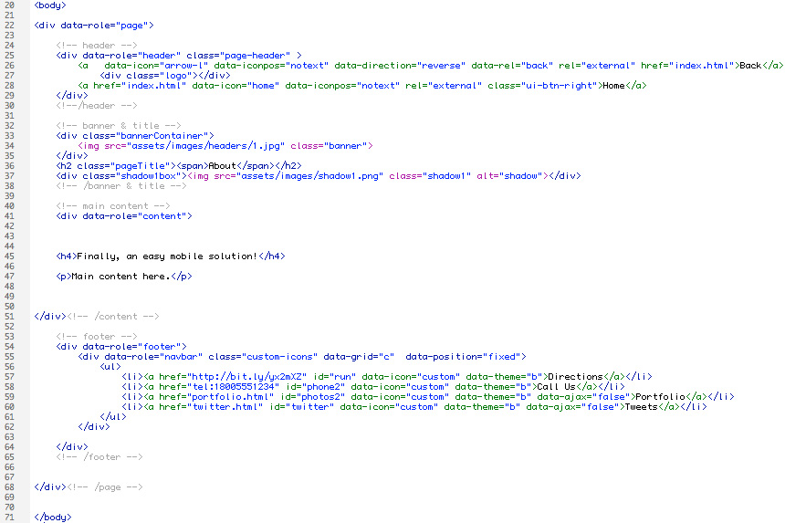2) Multi Column Layouts - top
2 Column Layouts
To create a 2 column layout you would use this code (template included with theme):
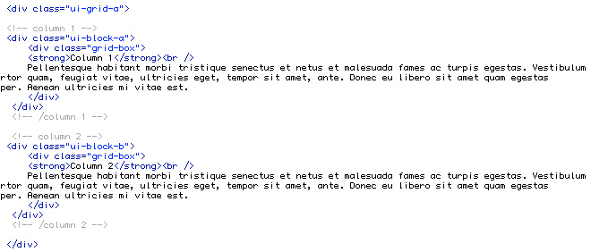3 Column Layouts
To create a 3 column layout you would use this code (template included with theme):
3) Switching Color Schemes (Themes) - top
4 different color schemes are included. In the head of your document you will see the link to the CSS file. Switch the CSS file name to choose your theme. Available options:
- style1.css
- style2.css
- style3.css
- style4.css
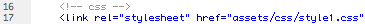
4) Customizing Your CSS - top
At the top of your CSS file you will find a lot of standard jQuery Mobile CSS code. Jump to line #1090 in the CSS file and you will see where you can edit your website theme.
5) UI "Callout Box" Bars - top
You can wrap UI bar code around a section to use it as a "callout". See the typography page for HTML snippet.
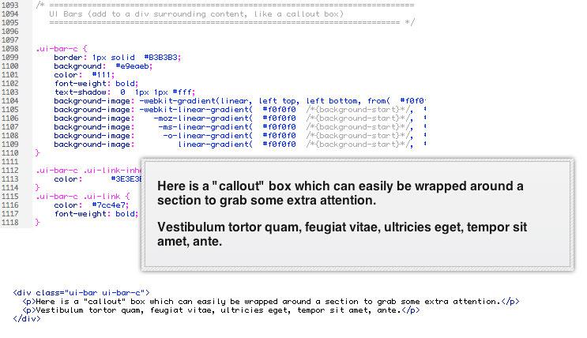6) Setting Main Background Image, Text & Link Styles - top
Below you can see where you change your main background image, link and text styles. There are 9 page backgrounds with your download. The CSS for each is included, simply uncomment the line for the background you would like to use. If you use your own background make sure to set the "background-size" for the image so it stays looking clear on HD displays.
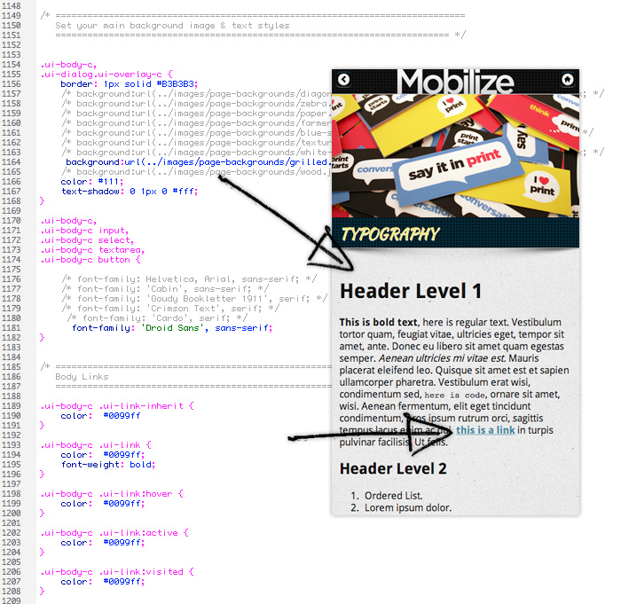7) Interior Header Image & Page Titles - top
The interior header images are set to grow vertically to a max height of 295px (so you most likely want to make your images that tall). After they reach that height they automatically stay centered in the screen if your browser was to grow larger. You can set the color that shows up behind the image, set the max height if you want it to be different, and below that set the page title CSS details.
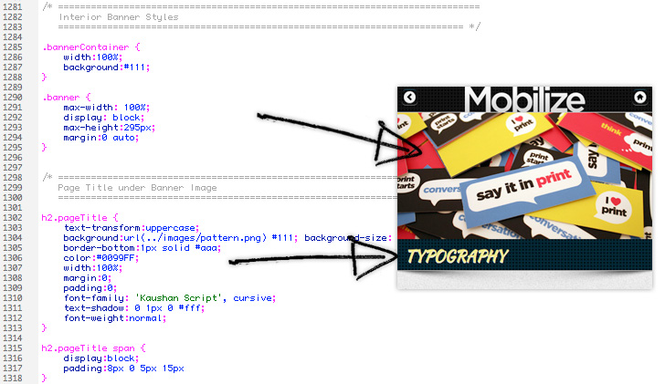8) Header Bar & Logo - top
Below you can see where you edit the background of your header bar. The logo is set as a background image on the div with a class of "logo". You want to make your logo image twice as large as what you want the final size to be, and call it out as the correct size in your CSS. This is to make the logo look clear on HD retina displays. If you open the logo in the download you will see the actual size is 370px by 80px, and you will see below the background image size is set to 185px by 40px.
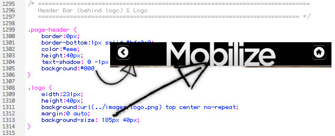9) Changing Color of Main Lists - top
Below you can see where you can change the color of the main navigation links. The pattern sites on top of the background color, so you can simply change the background color, or completely remove the pattern if you prefer. You also need to set the background colors of the button styles to match (line #1212 in your CSS file). Different font styles are included, uncomment out the font you prefer.
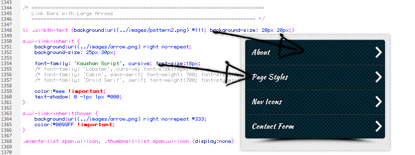10) Searchable & Non-Searchable Lists - top
Mobilize has a variety of lists that can be used to help organize content. By making the lists searchable you can help people find something quickly (a product, place, name, etc). You can set the text within the search field, or remove the search capability completely. See the highlighted text below which shows where you edit the text, or can remove completely.
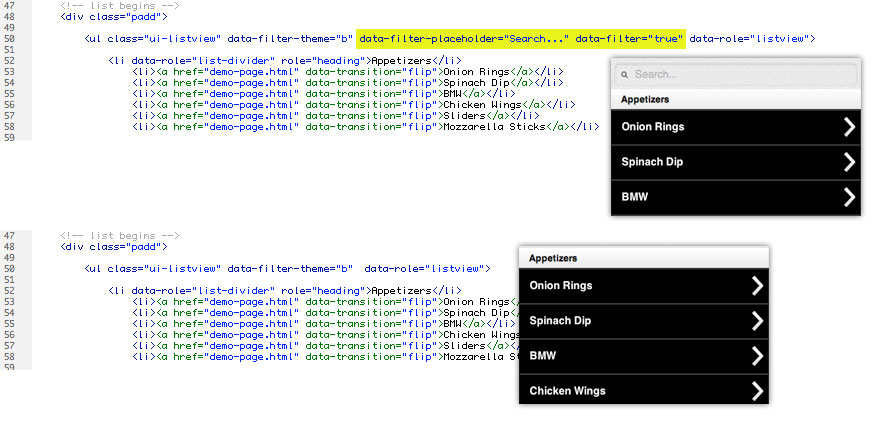11) Thumbnail List - top
Lists with thumbnail images are a great way to draw attention to a link. Menu items, products, real estate properties, etc. Make your thumbnail images 300px by 300px (so they look clear on HD retina displays).
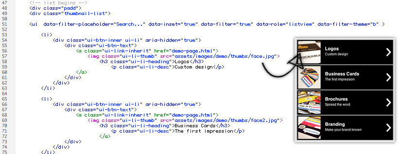12) Events List - top
Having a list of events can come in handy especially for a mobile website. This layout is also great for a list of products or even a blog landing page. Separate your lists with a "list-divider" section heading, add the number of items in that section and even add the time.
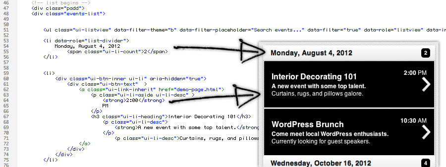13) Button Icons - top
Icons can easily be added to buttons. The icons can also be right aligned. Here are the available icons:
To switch the icon add data-icon="icon-name-here" to the list item or button link (see demo image below). Here is a list of available icons:
- data-icon="arrow-l"
- data-icon="arrow-r"
- data-icon="arrow-u"
- data-icon="arrow-d"
- data-icon="delete"
- data-icon="plus"
- data-icon="minus"
- data-icon="check"
- data-icon="gear"
- data-icon="refresh"
- data-icon="forward"
- data-icon="back"
- data-icon="grid"
- data-icon="star"
- data-icon="alert"
- data-icon="info"
- data-icon="home"
- data-icon="search"
Examples:
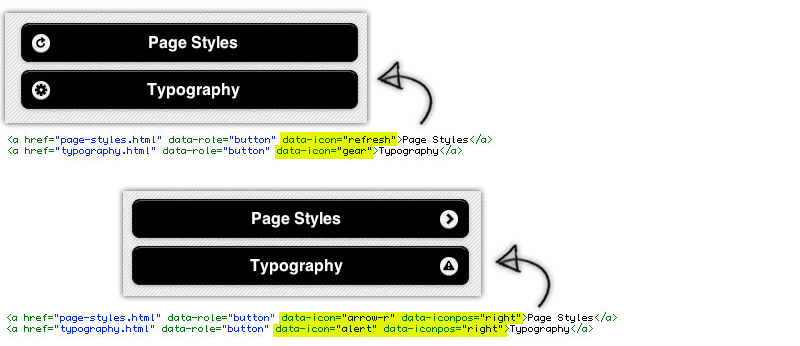
14) Styling Footer Navigation - top
Mobilize has over 60 HD navigation icons ready to use with your footer navigation bar. Icons such as contact icons, real estate, restaurant, social media, and more. Open icons.html in a web browser to view all the icons. All icons & CSS has been created to look great on HD retina displays.
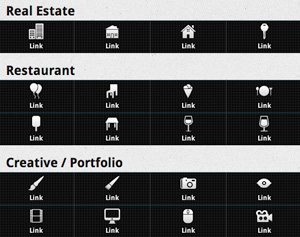
You can find all of the ids in the style.css file. To switch the icon you need to change the id on the footer link tag.
Example:
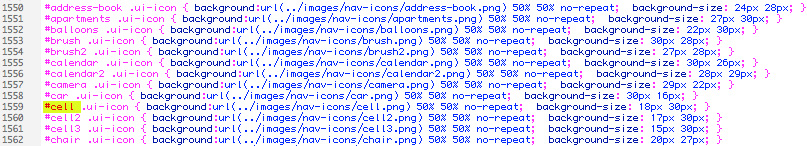
15) Sticky Footer - top
You can choose to have the footer navigation to be "sticky", floating on top of content always visible on the screen. There is an example sticky footer page with your download, here is the example code.
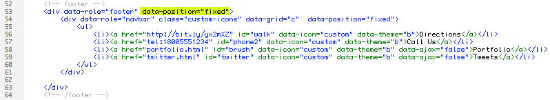16) Linking Pages - top
If you're linking fom one page to a page that has custom scripts that need to be loaded on every page load you may need to use data-ajax="false". This is because of how jQuery mobile handles page loads. Example:
17) Page Transitions - top
For pages that don't need to be loaded as the above example, you can use various page transitions. Examples below.
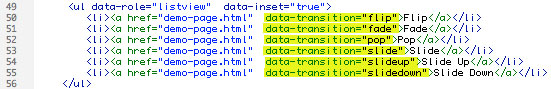18) Custom Mobile Links - top
- Telephone link: href="tel:18005551234"
- Formatted email link: href="mailto:mailto:joe@example.com?&subject=Important%20Message&body=You%20should%20checkout%20the%20Mobilize%20mobile%20theme%20on%20Theme%20Forest!"
19) Portfolio - top
Galleries used in the portfolio are located on the main portfolio.html file. You link to the gallery by linking to the id of the gallery "page".
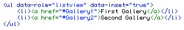
The images in the portfolio are included in an unordered list. You can set a title for the image by setting the alt tag.

20) Contact Form - top
To setup your contact form open assets > contact > assets > config.php

Make sure to set your name and the email address for the form to send to (lines 5 & 6).

You can change the text used for items by editing the language.php file in the assets folder.
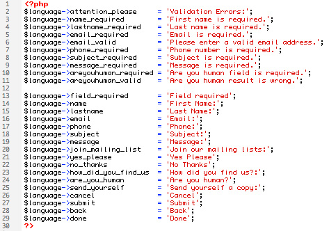
After submitting the form you are brought to a thank you page. This page is located at the bottom of the contact.php page.
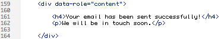
21) Add to Home Bubble - top
The homepage uses a script which creates a "Add to Home" bubble on iPhones and iPads. This reminds people that they can install an icon on their device which will create a web app on their device. To edit the icon used in the bubble open and edit assets > images > apple-touch-icon.png
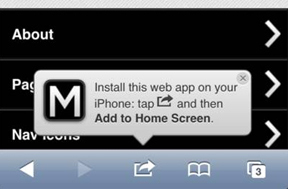
To change settings of the bubble open assets > add-bubble > src > add2home.js You can change the animation entering and leaving the page, how long you want the bubble to stay on the page and how long before it shows up again.
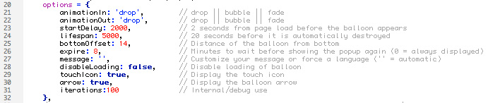
22) Creating POPUP 'Modal' Dialogs - top
To create a popup 'modal' window create a regular page and link to it by adding data-rel="dialog" to the link.
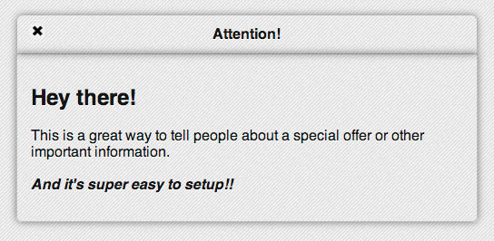
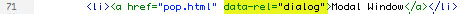
23) Homepage Slider - top
Mobilize uses a touch optimized responsive slider. Three animations are available, horizontal slide, vertical slide, and fade. The images are set to expand vertically to a max height of 300px. After they reach that height the slider automatically centers itself in the browser window as the browser size increases. You can also use captions on images if you wish. You can change the color of the slider background, caption text, and more in your CSS file at around line #1750. The caption has a variety of font styles setup. To choose a font style uncomment out the font that you would like to use.
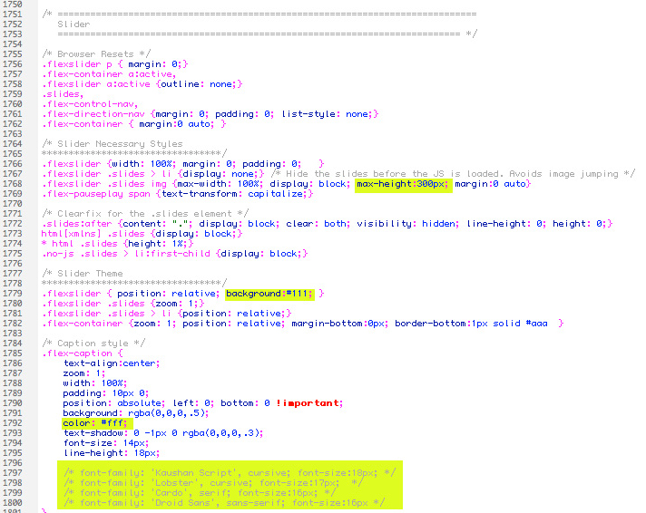 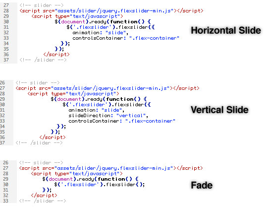24) Twitter Feed - top
Setup your Twitter feed by opening assets > js > twitter.js. Set your Twitter user name and the amount of tweets to show.
25) Optimization Tips - top
Since you will be creating a website for use on mobile devices it's a good idea to optimize the site as much as you can. In order to make the files easy to understand and edit, extra comments and whitespace have been added to the code. I would recommend removing as many comments and whitespace as possible when you are complete, to cut down on page size and load time. Also remove un-needed scripts. If you don't want to use the "add to home bubble", make sure to remove the script from the homepage, etc.
Make sure to only make the images in the portfolio as large as you need to. I may have used larger images in the demos so they would look nice in demos, but you may want to make the size or quality of your images less to cut down on file size. You should also remove any extra CSS that you aren't using..for example the CSS for the footer icons (only keep the CSS that you are using). Delete any commented out font styles that you aren't using, as well as the includes at the top of the CSS file to any Google fonts that you don't use.
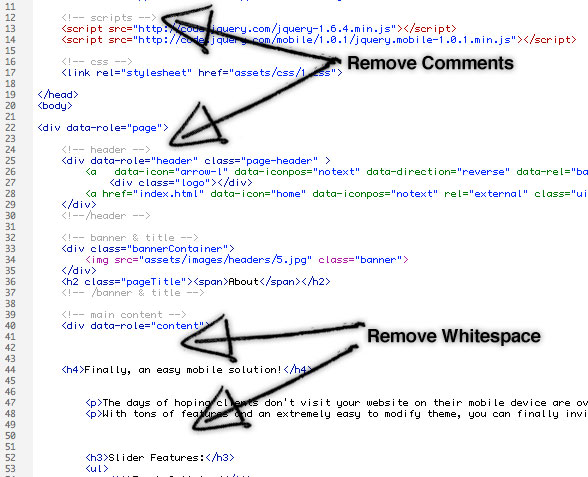26) Social Icons - top
9 Social media icons are included; each in black, red, green, and blue. The PSD file is also included, you can easily change the color of the icons by changing the layer style in Photoshop. Included Icons:
- Flickr
- Twitter 2
- Dribble
- WordPress
- YouTube
- Google Plus
- Linked In
27) Font Styles (Google Fonts) - top
Multiple font styles are included with your theme. The fonts are from the Google font API, and are included at the top of your CSS file. Make sure to delete any includes to fonts that you don't end up using (to cut down on page load time). To the right of the includes example code shows how to use each font.
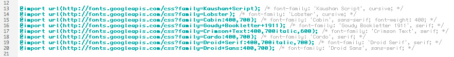Many areas of the CSS file have been setup with the optional font styles. To try a different font simply uncomment out one of the fonts (in the below example Droid Sans is the font that will be used).
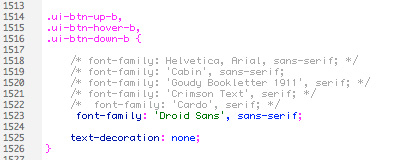28) Mobile Redirect - top
I created a blog entry on my design blog right here to show how to handle redirecting people visiting your full website to your new mobile website.
29) PSD Files - top
I've included the following PSD files:
- social-icons.psd
- logo.psd
30) Sources and Credits - top
Resources & Licensing:
- jQuery Mobile
- Add to home bubble (MIT License)
- Some backgrounds from SubtlePatterns.com (MIT License)
- Ajax Form from Shizzoweb (Extended License)
- Flex Slider (MIT License)
- Nav Icons by Yummygum (Free for commercial use)
- Google Fonts
Once again, thank you so much for purchasing this theme.
Mike Ilsley